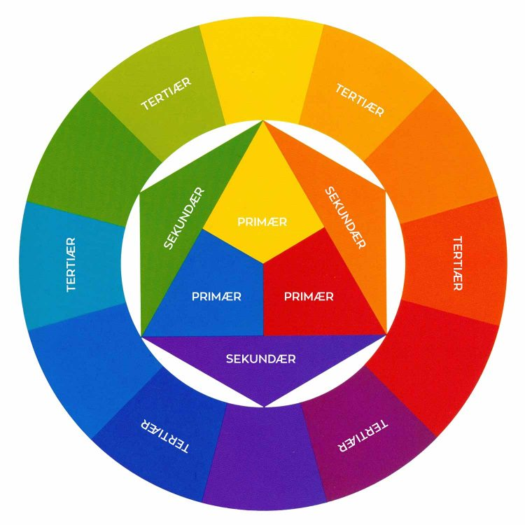

Farver påvirker vores sanser, følelser og tanker. Det er derfor ekstremt vigtigt, at vi nøje overvejer, hvilke farver vi har på vores sider. Alle farver fortæller noget forskelligt – og vi har alle et forhold til farverne.
Man kan dele farver op i kontraster; eksempelvis som ’Varme’ og ’kolde’ farver. Varme farver associeres med energi, passion og entusiasme. Kolde farver associeres derimod med ro, stabilitet og professionalisme. Med det, kan vi fremprovokere nogle følelser hos folk, når de kigger på vores side.
Når vi snakker skærme og farver skal det siges, at hver pixel på skærmen består af tre små lamper, som hver lyser sin egen farve: Rød, Grøn og Blå – de såkaldte RGB-farver. Alt efter lysstyrken på farverne, kan de gengive millioner af farve-varianter. Som designere definerer vi typisk de forskellige farver i HEX-koder. Ved brug af HEX-koder kan vi få den præcise variant af eksempelvis grøn vi ønsker.
Komplementære farver er den kombination med højest farve kontrast.

Analoge farver – er de farver som er ”naboer” altså tæt på hinanden.
Triadiske farver – er de farver som har lige stor afstand til hinanden i farvecirklen.
Typografi har meget at sige i forhold hvordan vi ser på en tekst, før vi overvejer at læse den.
Det er vigtigt, at vi overvejer brugen af seriffer contra sanseriffer. Serif – er fødder på bagstaverne de bliver typisk brugt til brødtekst, da de danner en ”linje”, og dermed er lettere at læse.
Sans serif betyder ”uden seriffer” og er dermed bogstaver uden fødder. De bliver typisk brugt til skilte, opslag, overskifter og lign. Typografi kan sige meget om, hvordan teksten skal forstås eller lyde og vil i flere tilfælde påvirke læseren af teksten til at overveje noget forskelligt alt efter, hvilken skrifttype der er i brug. Om en tekst er skrevet med en bred skrift, kontra en tynd skrift kan sige to vidt forskellige ting. Ligeledes om to ens overskrifter fremtræder barnligt med comic sans, eller fremstår fornemt med skråskrift.